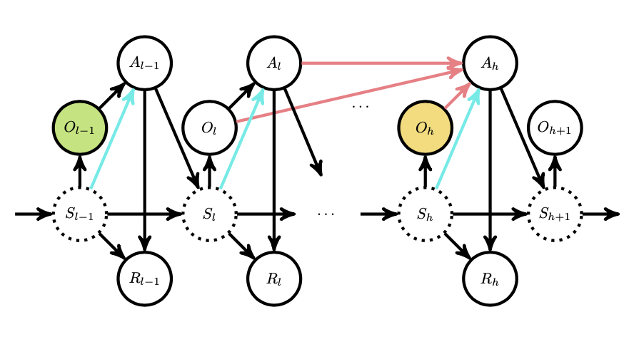
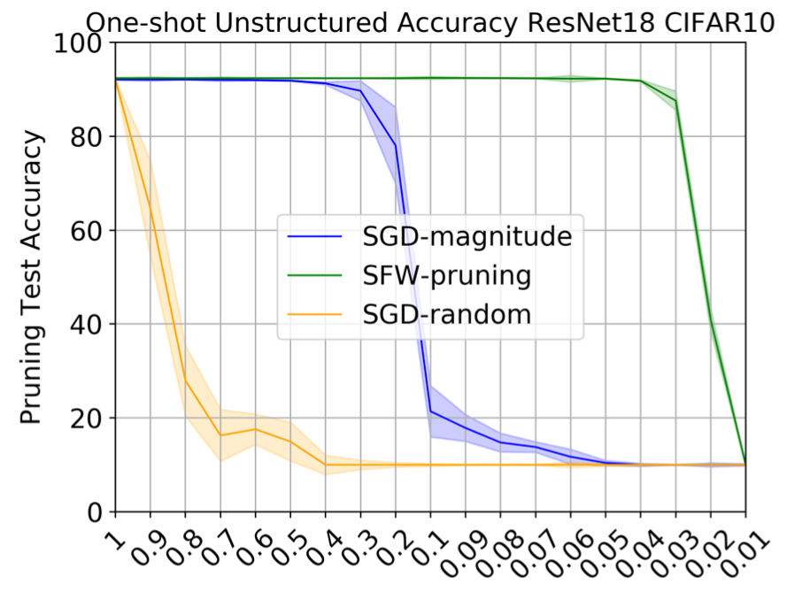

Research
The goal of my researches is to develop efficient data-driven decision-making algorithms and theory, enabling principled approaches via statistics and machine learning to addressing modern societal, medical, and economic challenges. Specifically, I’m interested in the following perspectives and topics:
Demystifying the mathematical and statistical foundations of machine learning/reinforcement learning algorithms.
Promoting robustness of machine learning methods in complex dynamic systems, with special attention to problems involving distributional robustness, confounding, and partial observability.
Developing modern machine learning models with low computational and memorial costs.
With these goals, my researches are based across the span of statistics, optimization, and machine learning.
Selected Research Experiences (By Topic)
During my undergraduate years, I am quite fortunate to be advised by several wonderful professors, for which I can explore the frontiers of areas that I am interested in.
Reinforcement Learning Theory
 |
Project 1: Reinforcement learning for Markovian exchange economy
|
|  | Project 2: Offline policy optimization in partially observable Markov decision processes
|
Robust Reinforcement Learning
 |
Project: Learning robust policy against disturbance in transition dynamics
|
Machine Learning Model Compression
|  | Project: Network pruning via Stochastic Frank-Wolfe: any sparsity and no retraining
|